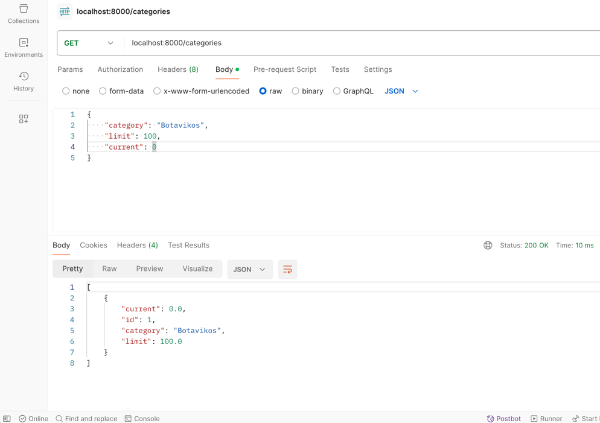
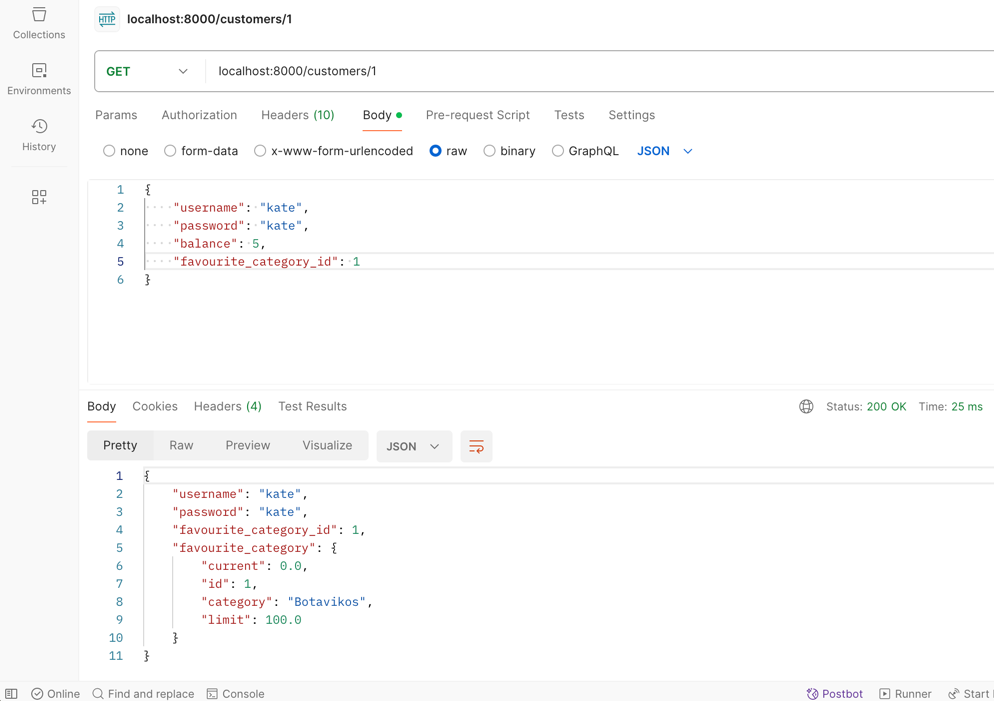
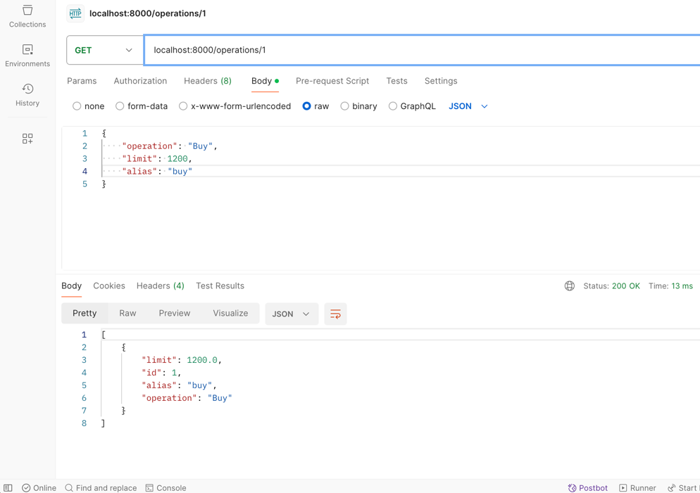
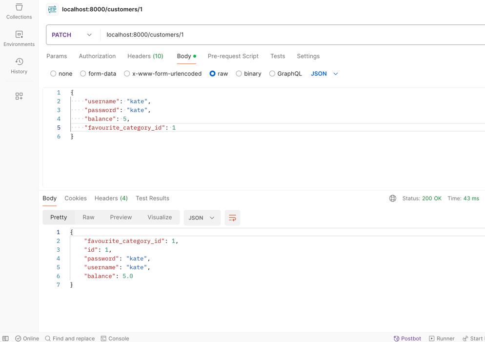
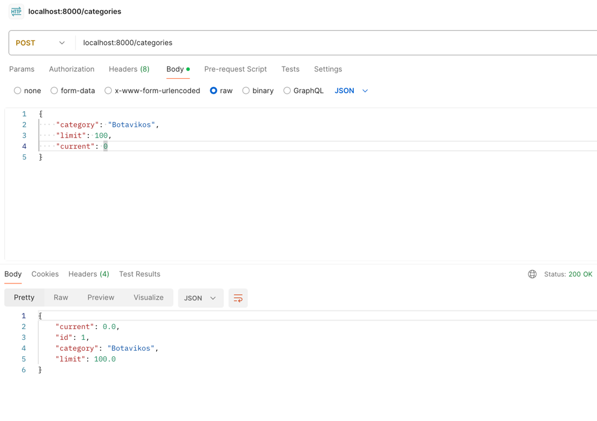
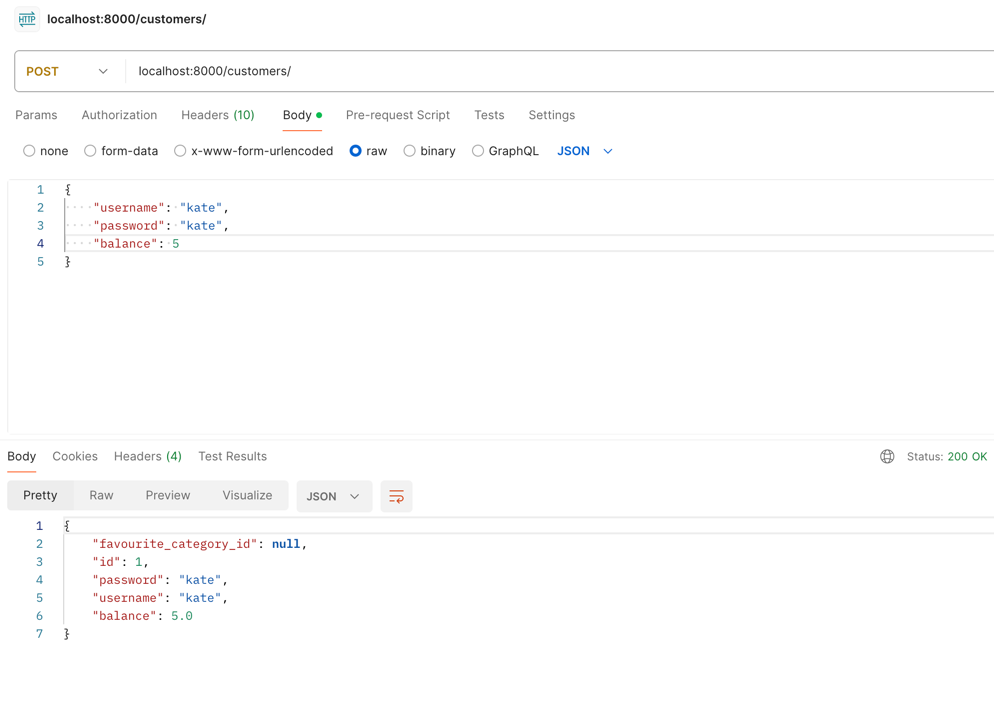
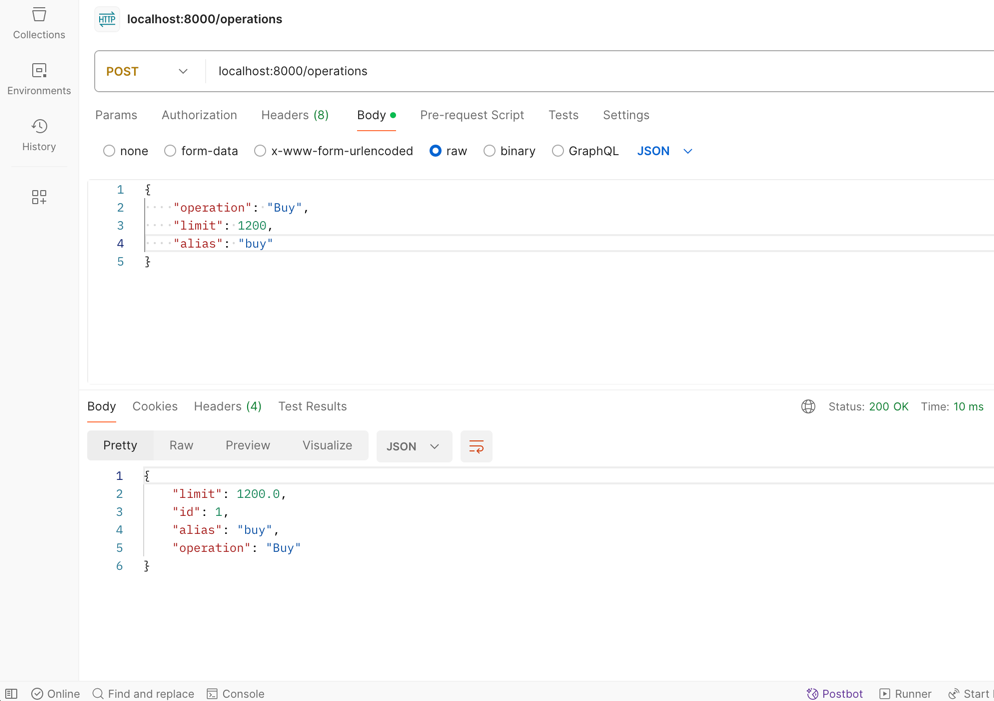
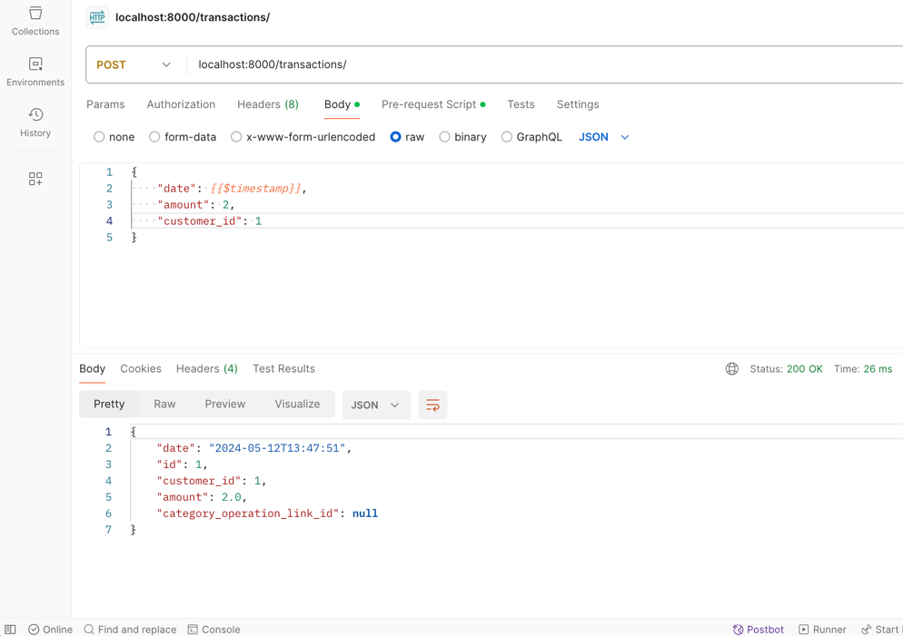

Лабораторная часть
Был выбран вариант с кошельком и учетом финансов. Ниже представлен код с подробными комментариями и скрины рабочие.
routers/customers.py
from typing import List
from fastapi import APIRouter, Depends, HTTPException
from db import get_session
from models.customers import Customer, CustomerCategory
customerRouter = APIRouter(prefix="", tags=["customer"]) # отвечает за swagger
@customerRouter.get("/customers/", response_model=list[CustomerCategory])
async def get_customers(session=Depends(get_session)) -> List[Customer]:
customers = session.query(Customer).all()
return customers
@customerRouter.get("/customers/{username_id}", response_model=CustomerCategory)
async def get_customer(username_id: int, session=Depends(get_session)) -> Customer:
customer = session.get(Customer, username_id) # выполняется запрос на выборку с фильтром по id и берется запись. Если каким-то образом несколько записей с таким id, вернутся все
return customer
@customerRouter.post("/customers/")
async def create_customer(customer: Customer, session=Depends(get_session)):
customer = Customer.validate(customer)
customer.id = None
session.add(customer)
session.commit()
session.refresh(customer)
return customer
@customerRouter.patch("/customers/{username_id}")
async def update_customer(customer: Customer, username_id: int, session=Depends(get_session)):
customer = Customer.validate(customer)
customer_from_db = session.query(Customer).filter_by(id=username_id).first()
if customer_from_db is None: # если запись с переданным id не найдена, то возвращаем исключение
raise HTTPException(status_code=404, detail="No such customer")
customer_data = customer.model_dump(exclude_unset=True)
for key, value in customer_data.items():
if value is None:
continue
setattr(customer_from_db, key, value)
session.add(customer_from_db)
session.commit()
session.refresh(customer_from_db)
return customer_from_db
@customerRouter.delete("/customers/{username_id}")
async def delete_customer(username_id: int, session=Depends(get_session)):
session.query(Customer).filter_by(id=username_id).delete()
session.commit()
return "Deleted"
models/customers.py
from typing import Optional
from sqlmodel import SQLModel, Field, Relationship
from models.categories import Category
class User(SQLModel): # создаем класс пользователя и передаем стандартную SQLModel без флага таблицы
username: str = Field(unique=True, index=True, nullable=False) # поле уникальное недопускающее null значения и по которому строится индекс
password: str = Field(nullable=False)
favourite_category_id: Optional[int] = Field(default=None, foreign_key="category.id") # один-ко-многим, опциональное поле с внешним ключом к category.id
class Customer(User, table=True): # создаем класс потребителя на основе пользователя и передаем флаг таблицы - будет содержать свои поля и поля пользователя
id: Optional[int] = Field(default=None, primary_key=True) # поле с первичным ключом
balance: float = Field(default=0.0, nullable=False)
favourite_category: Optional[Category] = Relationship(back_populates="favourite_category") # один-ко-многим, один пользователь может иметь одну любимую категорию, но одну категорию может выбрать множество пользлователей
class CustomerCategory(User): # класс наследник от дефолтного пользователя - служит для отображения категории целиком дополнительно к id
favourite_category: Optional[Category] = None
db.py
from sqlmodel import SQLModel, Session, create_engine
from dotenv import load_dotenv
import os
load_dotenv('.env') # загрузка переменных среды (энвы) из файла .env
db_url = os.getenv('DB_ADMIN') # получение переменной с ключом DB_ADMIN
engine = create_engine(db_url, echo=True) # создание "движка БД" - экземпляр со всем необходимым для работы с БД
# echo=True включает вывод всех осуществляемых SQL-запросов в командную строку
def init_db():
SQLModel.metadata.create_all(engine) # создание всех табличек из контекста (пометка table=True)
def get_session():
with Session(engine) as session: # создание сессии из движка
yield session # возврат генератора - функция вычисления значения на лету (выполнился и не хранится в памяти)
main.py
from fastapi import FastAPI
from db import *
from routers import customers, categories, operations, transactions
app = FastAPI() # создаем приложение
app.include_router(customers.customerRouter) # включаем роутер пользователей
app.include_router(categories.categoryRouter) # включаем роутер категорий
app.include_router(operations.operationRouter) # включаем роутер операций
app.include_router(transactions.transactionRouter) # включаем роутер транзакций
@app.on_event("startup") # при событии запуска сервера выполняется эта функция
def on_startup():
init_db() # вызов функции из файла db.py
migrations/env.py
import os
from logging.config import fileConfig
from sqlalchemy import engine_from_config
from sqlalchemy import pool
from alembic import context
from dotenv import load_dotenv
from sqlmodel import SQLModel
from models import *
# this is the Alembic Config object, which provides
# access to the values within the .ini file in use.
config = context.config
# Interpret the config file for Python logging.
# This line sets up loggers basically.
if config.config_file_name is not None:
fileConfig(config.config_file_name)
load_dotenv('.env') # загрузка переменных среды (энвы)
db_url = os.getenv('DB_ADMIN') # получение ссылки
config.set_main_option('sqlalchemy.url', db_url) # устанавливаем в конфиг опцию sqlalchemy.url равный нашей ссылке из энв файла
# по этой доке https://alembic.sqlalchemy.org/en/latest/api/config.html
# add your model's MetaData object here
# for 'autogenerate' support
# from myapp import mymodel
# target_metadata = mymodel.Base.metadata
target_metadata = SQLModel.metadata # устанавливаем метадату с нашей БД
# other values from the config, defined by the needs of env.py,
# can be acquired:
# my_important_option = config.get_main_option("my_important_option")
# ... etc.
def run_migrations_offline() -> None:
"""Run migrations in 'offline' mode.
This configures the context with just a URL
and not an Engine, though an Engine is acceptable
here as well. By skipping the Engine creation
we don't even need a DBAPI to be available.
Calls to context.execute() here emit the given string to the
script output.
"""
url = config.get_main_option("sqlalchemy.url")
context.configure(
url=url,
target_metadata=target_metadata,
literal_binds=True,
dialect_opts={"paramstyle": "named"},
)
with context.begin_transaction():
context.run_migrations()
def run_migrations_online() -> None:
"""Run migrations in 'online' mode.
In this scenario we need to create an Engine
and associate a connection with the context.
"""
connectable = engine_from_config(
config.get_section(config.config_ini_section, {}),
prefix="sqlalchemy.",
poolclass=pool.NullPool,
)
with connectable.connect() as connection:
context.configure(
connection=connection, target_metadata=target_metadata
)
with context.begin_transaction():
context.run_migrations()
if context.is_offline_mode():
run_migrations_offline()
else:
run_migrations_online()
Screenshots
       